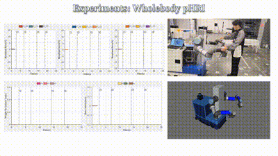

Yu Sun
Hello! I am currently a second-year MPhil student (Sep. 2022 - ) in the Control Science and Engineering department at Zhejiang University, where I am a member of the Robotics Lab. My advisors are Prof. Rong Xiong, Yue Wang, and Haojian Lu. My primary research interests include Embodied Haptics and Human-Robot Interaction.
I earned my B.Eng degree (Sep. 2018 - Jun. 2022) in Astronautics and Engineering from the Harbin Institute of Technology. Over the years, I have had the opportunity to collaborate with esteemed professionals such as Dr. Zhengyou Zhang, Dr. Yu Zheng, Dr. Lipeng Chen, and Dr. Wang-Wei Lee at Tencent RoboticsX. Currently, I am also a research intern at Tencent RoboticsX.
Publications
- Beyond End-Effector: Utilizing High-Resolution Tactile Signals for Physical Human-robot Interaction
Yu Sun, Cong Xiao, Lipeng Chen, Lu Chen, Haojian Lu, Yue Wang, Wang-Wei Lee, Yu Zheng, Zhengyou Zhang, Rong Xiong,
(major revision) Submitted to T-IE | video
 - A Review of Intelligent Walking Support Robots: Aiding Sit-to-Stand Transition and Walking
Yu Sun, Cong Xiao, Lipeng Chen, Lu Chen, Haojian Lu, Yue Wang, Yu Zheng, Zhengyou Zhang, Rong Xiong
T-NSRE 2024 | pdf | paper


- Tactile-based Compliance with Task-Constrained Hierarchical Force Propagation: A Case Study of Human-like Walking Support Robot
Yue Wang, Cong Xiao, Yu Sun, Lipeng Chen, Lu Chen, Haojian Lu, Yu Zheng, Zhengyou Zhang, Rong Xiong
Submitted to T-MECH | video
Projects
- Application research on rolling "semi" hard landing scheme based on emphasis on stability and biomimetic buffer structure
- Tactile-based robot walking support


Ongoing Project, Master's Thesis